Shady Shipping
Shady ShippingPolice tools and abilities
10 of 18 abilities built; 4 more planned per side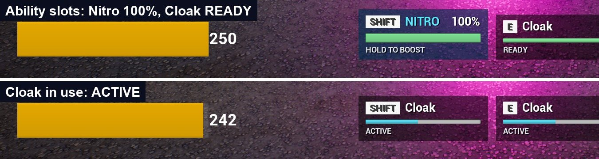
What it does for play. Every player picks two abilities from their side's list before a round. The pair is their build, like a class in a team game: one cop might hunt with Lights Out and the Spike Strip, another with the Drone and the Net. Every ability has a counter on the other side and a tell the other side can see or hear, so no trick is unbeatable.
How it works
| Rule | What happens |
|---|---|
| Two picks | Each player picks 2 abilities in the garage. Last round's build is picked by default. |
| In the round | The two abilities sit on Shift and E (LB and Y on a pad), each slot showing its name, readiness and time left. |
| Limits | Each runs on charges or a cooldown from the tuning sheet. A build has at most one always-on ability. |
| Counters | Every ability has an answer on the other side (see the tables). |
| Tells | Each one can be seen, heard or felt by the other side: lamps on the cop's roof for the net, a shimmer when the van cloaks. |
| Feel | Each ability has its own camera shake, pad rumble and burst of effects, so it can be felt, not just seen. |
| Warnings | Both sides get clear banners: SPIKES AHEAD, NET BEHIND, DRONE ON YOU, EMP CHARGING and the result of each use. |
Police abilities
| Ability | What it does | Van's counter | Status |
|---|---|---|---|
| Net | Fires a rope from the bumper that grabs the van's back wheels and drags it; no nitro while caught | Keep the rear away from cop bumpers | Built and playtested |
| Spike Strip | Drop a folding stinger; once its spikes flip up, the van's tyres burst until a garage fixes them | Run-flat Tyres; read the road | Built and playtested |
| Lights Out | Siren and lights off: the cop vanishes from the van's radar | Scanner | Built and playtested |
| Drone | Flies after the van and locks on for 6 s: every cop sees it live, even cloaked | Smoke breaks the lock; nitro outruns it | Built |
| EMP | Up close, a blue ring switches off the van's nitro and abilities for 3 s | Keep away | Built |
| Tank | For a few seconds: heavier, tougher and harder shoving | Nitro, alleys | Planned |
| Roadblock | Drop a barrier across a lane for a while | Alleys | Planned |
| Trace | One use: instantly pings where the van is | Jammer | Planned |
Van abilities
| Ability | What it does | Police counter | Status |
|---|---|---|---|
| Nitro | Two halves: each tap fires a 2 s boost with a blast and a fire trail | EMP; the net blocks it | Built and playtested |
| Cloak | The van vanishes from screens and radar for a few seconds; the driver sees a blue ghost | Drone | Built and playtested |
| Smoke | A purple wall of smoke across the road that blocks sight | Drone, Trace | Built and playtested |
| Run-flat Tyres | Always on: spikes do nothing | Pick a different build | Built and playtested |
| Scanner | Always on: cops using Lights Out stay on the van's radar | Pick a different build | Built |
| Armour | Always on: less crash damage, the net drags harder, EMP lasts half as long | Spike Strip | Planned |
| Decoy | A fake van blip on the police radar going the other way | A cop actually seeing the van | Planned |
| Jammer | For a while, pings show a much bigger search circle | Trace | Planned |
| Parcel Drop | Throw parcels out of the back; cars that hit one spin out | Keep your distance | Planned |
| Oil Slick | Cars driving through it lose grip | Drive round it | Planned |
The PIT manoeuvre from pre-production (a shove on the van's rear corner that spins it) is not built. Ramming with the car still damages the van, and the arrest ring now gives the police the stopping power the PIT was meant to add.
The numbers
| Ability | Key values |
|---|---|
| Net | Arms for 3 s; reload 8 s; catch range 2.6 m from a back wheel; holds for 6 s; caught top speed 12 km/h |
| Spike Strip | 2 charges; 25 s each to come back; lies 20 s; spikes up after 0.8 s; burst tyres lose half their grip |
| Lights Out | Dark for 25 s |
| Drone | Flies at 180 km/h; locks on for 6 s |
| EMP | Reaches 35 m; switches the van off for 3 s |
| Nitro | 2 s per half; a half comes back about every 6 s |
| Smoke | Hangs for 10 s; about 13 m wide |
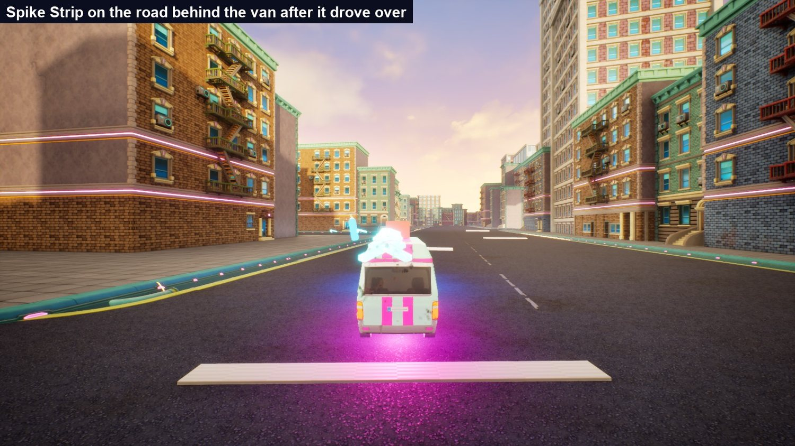
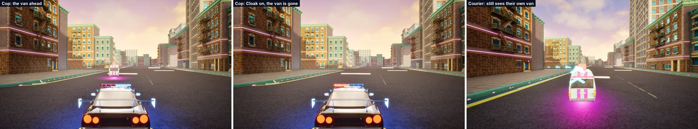
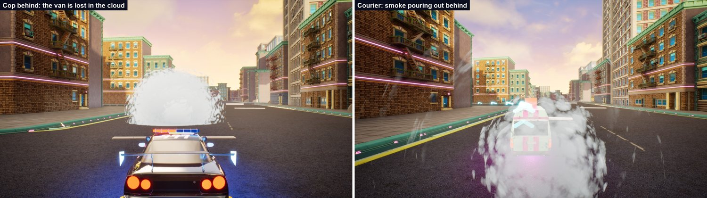
Everything in the build
| Feature | What it does for play |
|---|---|
| Bumper net | A cop presses E; for 3 s a van wheel near the front bumper is caught |
| Snare | A caught van is braked to 12 km/h for 6 s with no nitro |
| Rope | A spring pulls the van round by the caught wheel and tows the cop |
| Yellow net on the car | Folds up over the reload, so "ready" can be seen on the car |
| Siren and light bar | Always on, louder as a cop closes in; the cop's own is quieter |
| Cop respawn | A wrecked cop returns after 5 s, out of the van's sight |
| Spike strip | A folding stinger that arms after 0.8 s and snaps when hit |
| Net and spike alerts | Warning boxes and banners for both sides, with distances |
| Scanner | A van perk that keeps a dark cop on the van's radar |
| Drone | Chases the van and shows it to every cop for 6 s; smoke breaks it |
| EMP | A 35 m burst that switches off the van's nitro and abilities for 3 s |
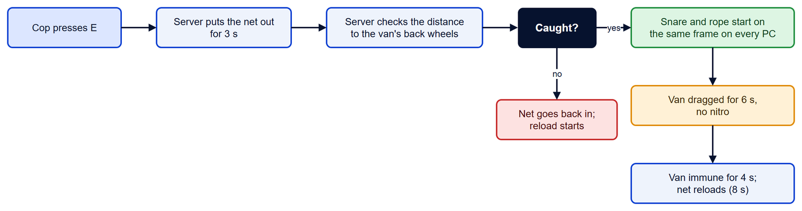
How the later tools work
The second wave of tools came after the abilities system (see the Abilities chapter), which lets each player pick two tools as a "build".
| Tool | The cop's side | The van's side (tell and counter) |
|---|---|---|
| Spike strip | STRIP DOWN note; TYRES BURST banner with a ping | SPIKES AHEAD box within 50 m; Run-flat Tyres drive through |
| Net | Two amber roof lamps blink faster as the 3 s run out; CAUGHT! or NET MISSED | NET BEHIND box with the distance; NETTED! with the seconds left |
| Lights Out | Note with a draining bar; turns red if the van has Scanner | Scanner keeps the dark cop on the radar |
| Drone | VAN SPOTTED! banner; sees the van through walls with a distance pin | DRONE ON YOU warning; nitro outruns it at 180 km/h; smoke breaks the lock |
| EMP | Dashed reach ring turns cyan with the van inside | EMP CHARGING · GET AWAY; then both ability slots read OFFLINE |
The strip overhaul fixed two faults of the first version: it was only a flat placeholder, and a cop driving just in front of the van could spike it instantly. Each tool also got "feel": a shake or rumble for the player who used it, and a clear effect in the world. The spike strip, for example, gives four quick bangs and sparks off every tyre, then a flap with every turn of the wheels. Run-flats give one dull thud and green sparks instead, so both players know at once that the strip failed.
From the build
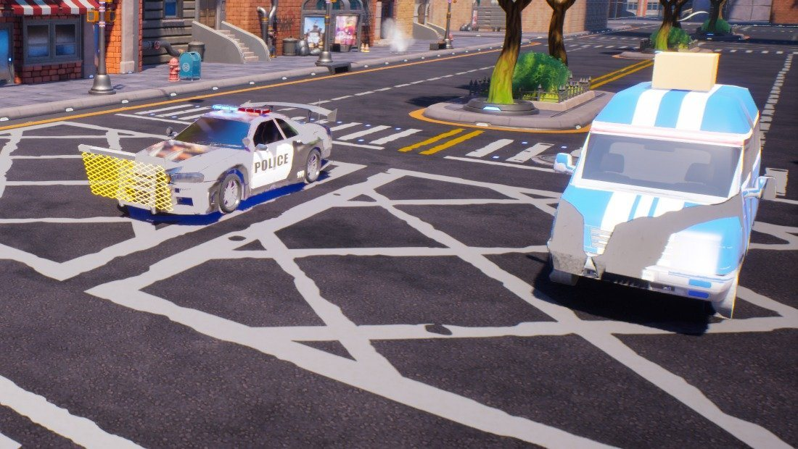
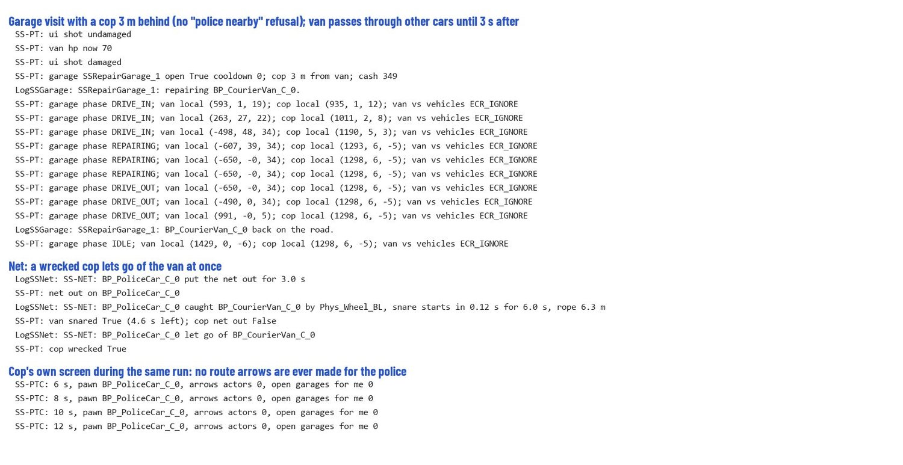
The net was tested on one PC with a server and two players under made-up network conditions. Every snare and rope started on the server's frame on both screens.
| Network (round trip, loss, jitter) | Catches | Started on the server's frame | Largest jump in a snare |
|---|---|---|---|
| 100 ms, 0%, none | 2 | all, on both PCs | 0 cm |
| 200 ms, 2%, none | 5 | all (1 replayed on each PC) | 1 cm |
| 150 ms, 5%, 60 ms | 4 | all (3 to 4 replayed, 1 frame late) | 2 cm |
The respawn was tested with three spawn points round the van. One was 50 m away in the open, one 200 m away in the open, and one 200 m away behind a wall. The wrecked cop came back at the hidden one after 5 s, repaired and on the ground.
Everything in the build
| Feature | What it does for play |
|---|---|
| Two ability slots | The two garage picks sit on two keys; the HUD shows ready, active or seconds left |
| Ability feel | Camera kicks, pad rumble and bursts in the world for every built ability |
| Police body kit | Spoilers, guards, rear parts, roof lamps, skirts, wheels and paint for each part |
| The van's new look | Blacked-out windows, armour plates and bullet holes explain why it is chased |
| Van body kit | 22 hand-modelled parts, five wheels and back doors that open at every bay |
| Arrest ring | A cop stopped beside a nearly stopped van can arrest it |
| Three strikes | A wreck or an arrest is a strike; three and the police win |
| Drop-in | After a strike the van picks one of three drop zones from the sky |
| Strike cutscenes | BUSTED and WRECKED scenes with a cargo flyer that lifts the van out (in progress) |
The abilities built so far:
| Ability | Side | What it does |
|---|---|---|
| Net | Police | Catches the van's back wheels and drags it |
| Spike Strip | Police | Dropped behind the cop car; bursts tyres for 10 s or until repaired |
| Lights Out | Police | Siren and lights off, off the van's radar, 10% slower, up to 25 s |
| Drone | Police | Locks onto the van for 6 s so every cop sees it (see the police chapter) |
| EMP | Police | A 35 m burst that switches off the van's nitro and abilities for 3 s |
| Nitro | Courier | A 2 s boost for each half of the tank |
| Cloak | Courier | Invisible to every cop and off their radar for 4 s |
| Smoke | Courier | A purple wall across the road that hangs for 10 s and blocks sight |
| Run-flat Tyres | Courier | Spike strips do nothing |
| Scanner | Courier | A cop running Lights Out stays on the van's radar |
Still to build: Tank, Roadblock and Trace for the police; Parcel Drop, Decoy, Oil Slick, Jammer and Armour for the courier.
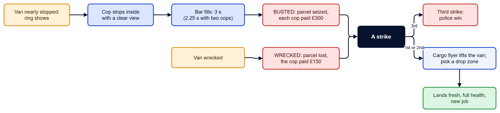
From the build
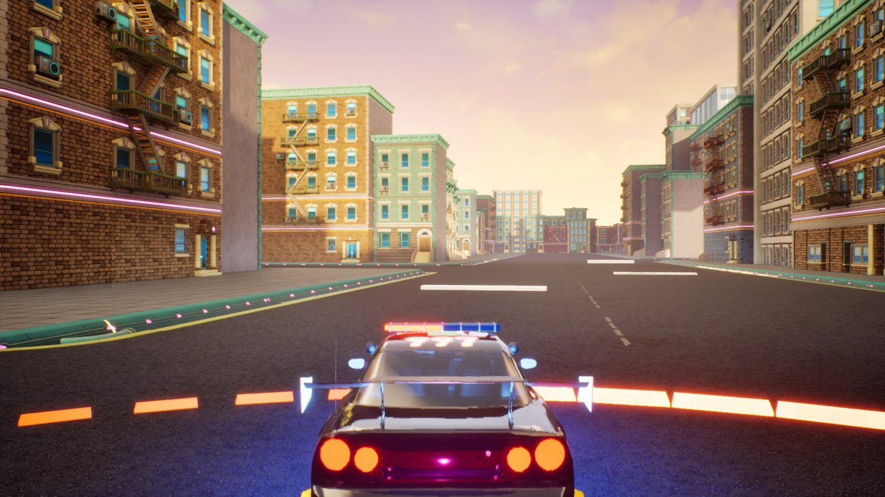
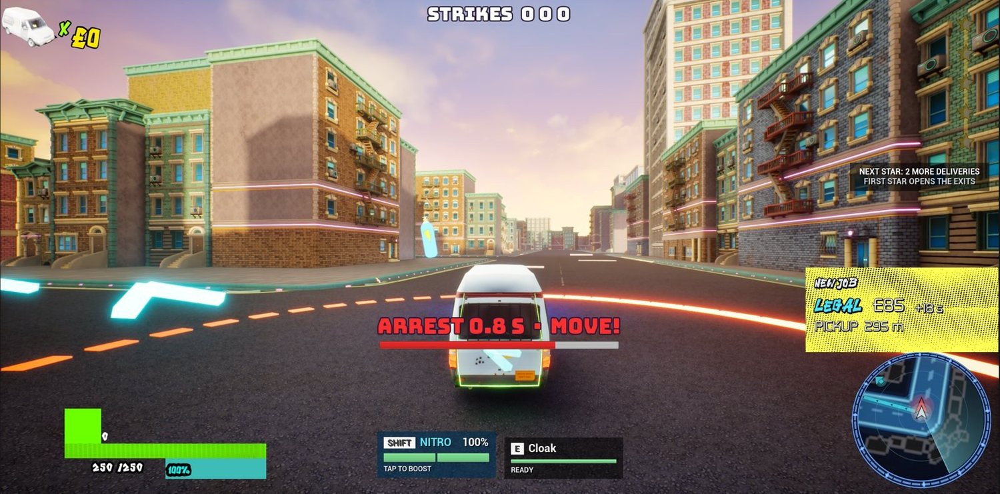
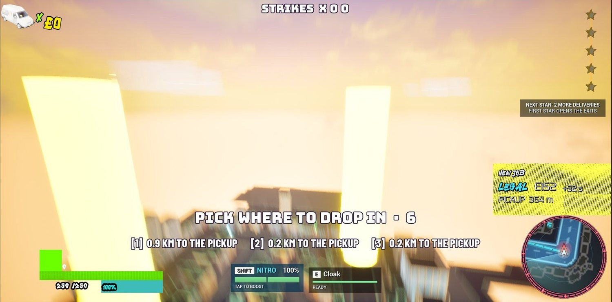
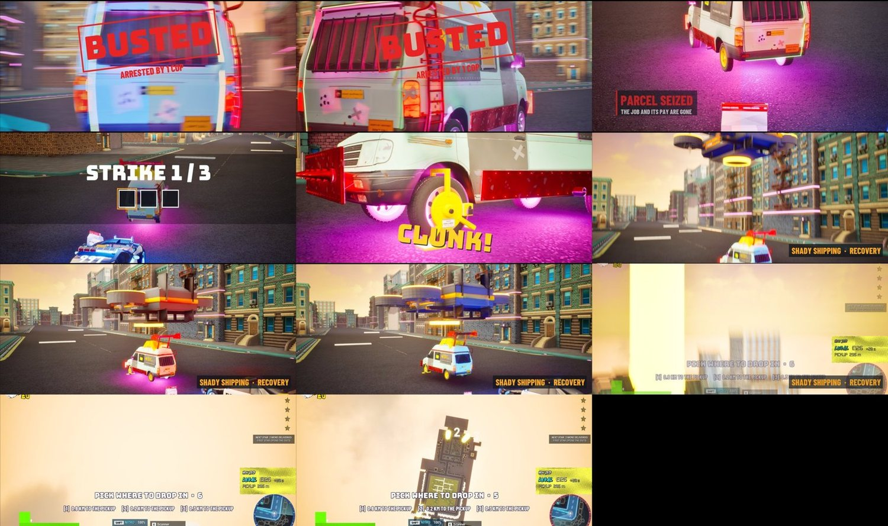
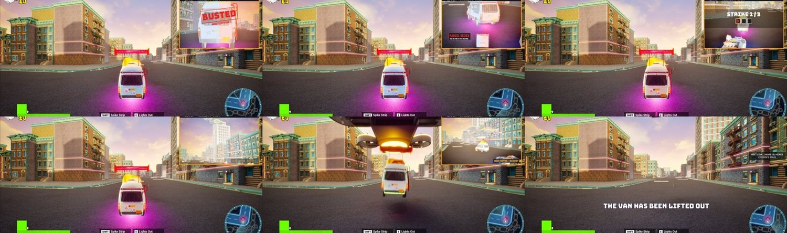
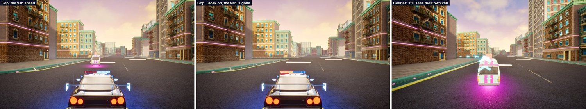
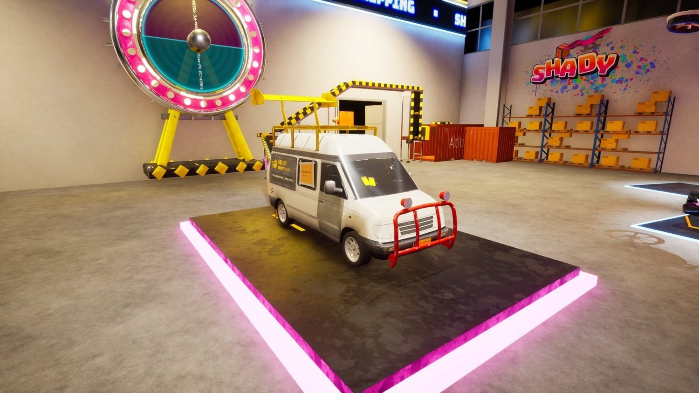
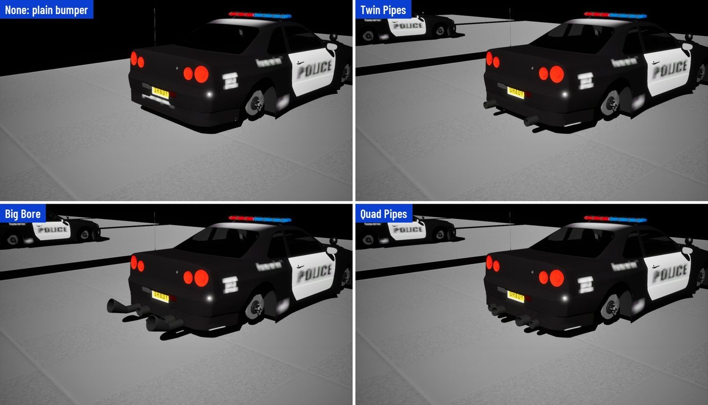